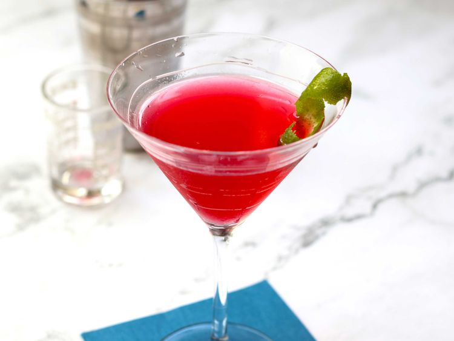

Cosmopolitan

Description
This cosmopolitan drink made with Cointreau, vodka, cranberry juice, and lime shakes up to something special in just a few minutes.
Ingredients
- 1 cup ice, or as needed
- 1 (1.5 fluid ounce) jigger vodka
- 1 ½ fluid ounces cranberry juice
- ½ fluid ounce orange-flavored liqueur (such as Cointreau)
- 1 teaspoon fresh lime juice
- 1 twist lime zest, garnish
Directions
- Fill a cocktail shaker with ice.
- Add vodka, cranberry juice, Cointreau, and lime juice.
- Cover and shake until the outside of the shaker has frosted.
- Strain into a chilled glass and garnish with lime twist. Enjoy!
Home